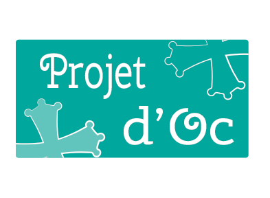

<div class="swiper-container">
    <div class="swiper-wrapper">
        <ks-swiper-container initial-slide="0" loop="false" show-nav-buttons="false" slides-per-view="1" space-between="0" pagination-clickable="true">
            <ks-swiper-slide class="swiper-slide">
                <div class="swiper-container" style='background-image:url("../images/toulouse.jpg")'>
                    <div class="panel-body">
                        <div class="panel panel-default panelInside containerSlide">
                            <div class="panel-heading">
                                
                            </div>
                            <div id="descriptionSliderHome" class="panel-body">
                                Projet d'oc est un site de financement participatif Toulousain. Venez proposer ou financer des projets créatifs, hors du commun ou solidaires prés de chez vous ! Inscrivez vous vite !
                            </div>
                        </div>
                    </div>
                </div>
            </ks-swiper-slide>
            <ks-swiper-slide class="swiper-slide" ng-repeat="projet in projects">
                <div class="swiper-container swiperProjet" style='background-image:url("{{projet.urlPhotoPrincipal}}")'>
                    <div class="panel-body">
                        <div class="panel panel-default panelInside containerSlide">
                            <div class="panel-heading">
                                <h1>{{projet.titre}}</h1>
                            </div>
                            <div id="descriptionSlider" class="panel-body">
                                <p>{{projet.description}}</p>
                            </div>

                            <div class="row">
                                <h3 ng-show="!projet.isAboutUs"> Objectif : {{projet.objectifFinancier}}€</h3>
                                <h3 ng-show="!projet.isAboutUs"> Récoltés : {{projet.sommeRecoltee}}€</h3>
                                <button ng-show="!projet.isAboutUs" href="" ng-click="goToProjectDetail(projet.id)" class="pull-right btn btn-info">En savoir plus ... </button>
                            </div>
                        </div>
                    </div>
                </div>
            </ks-swiper-slide>
        </ks-swiper-container>
    </div>
</div>